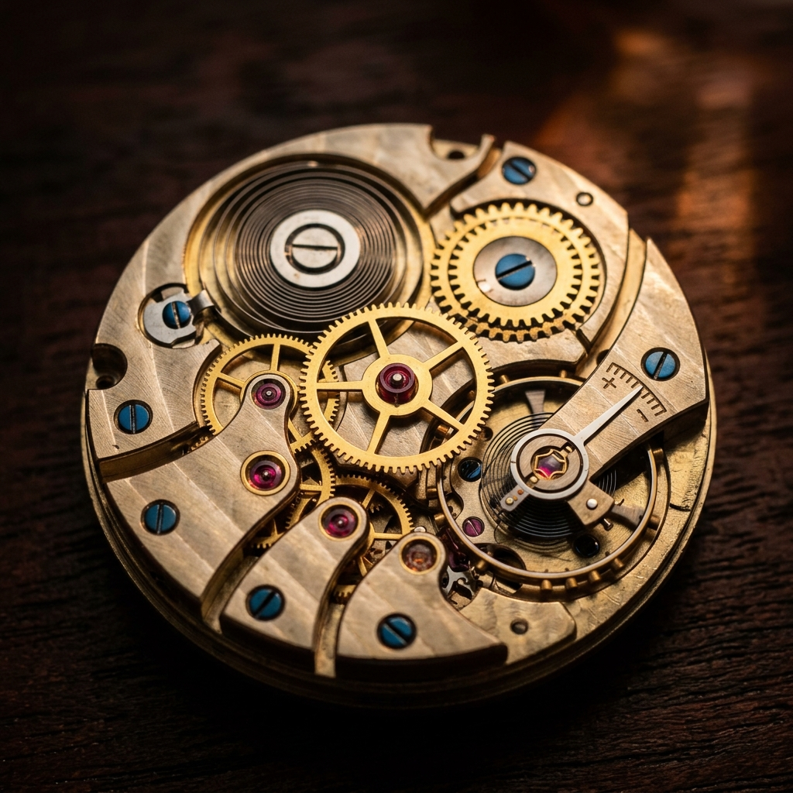

Intake & Assessment
Every restoration begins with an exhaustive external and internal evaluation. We document the watch's condition, identify original vs. replacement parts, and assess the mechanical health of the gear train.
This phase includes high-resolution photographic documentation for the client's record.

Disassembly & Inspection
The mechanical movement is completely dismantled into its component parts — often over 150 individual pieces. Each part is inspected under a microscope for wear, fatigue, or corrosion.
Worn components are identified for repair or authentic Swiss-made replacement.

Ultrasonic Cleaning
Components undergo several stages of cleaning in ultrasonic baths using specialized solutions to remove decades of old lubricants and debris without affecting the metal's finish.
The result: parts that are chemically clean and ready for precision lubrication.

Technical Restoration
The heart of our work. Pivots are polished, jewels replaced, and mainsprings renewed. The movement is painstakingly reassembled and lubricated with factory-specific synthetic oils.

Cosmetic Refinement
The case and bracelet are restored, and the dial undergoes focused cleaning. We prioritize 'conservation' over 'polishing'—preserving the sharp lines and historic character.
Removing depth scratches while maintaining original geometry.

Timing & Testing
The watch is tested on a Timegrapher in 5 positions and on an auto-winder for 72 hours. Water resistance is verified using state-of-the-art pressure chambers.
A mandatory final phase to ensure archival-grade precision.